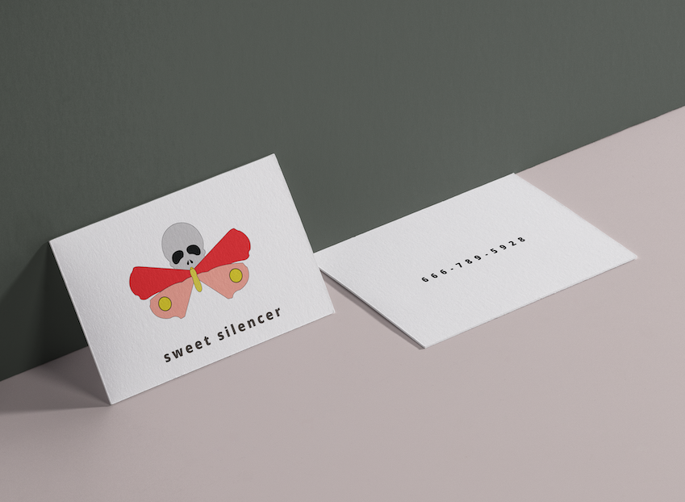

For this project we were ask to come up with a product that had to do with insects/bugs. I drew inspiration from the film Silence of the Lambs and used the moth as my designated insect. I took a darker take on this product and imagined it being a poisonous sucker (like a ringpop). This is definitely a more underground word of mouth business. I imagined that since this such a secretive operation that we would keep the products simple, light hearted and ambiguous.